Superion
"Generation 2" Giftset (Combiner Wars) [Online Retailer Exclusive]
Superion
"Generation 2" Giftset (Combiner Wars) [Online Retailer Exclusive]
Allegiances
: Autobot (Generation
2)
Set Price
: $100 (U.S.)
(NOTE: Because this set is composed of repaints,
this is not a full-blown review. This mainly covers any changes made to
the set and the color scheme, and merely compares it to the original versions
of these molds. For a review on the mass-release Air Raid, go
here
.
For a review on the mass-release Firefly-- the mold used for both Firefly
and Quickslinger-- go
here
. For a review on
the mass-release Powerglide, go
here
. For
a review on the mass-release Silverbolt, go
here
.
For a review on the mass-release Skydive, go
here
.)
Air
Raid (G2)
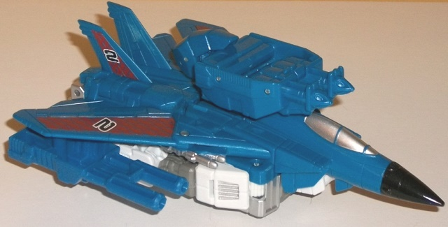
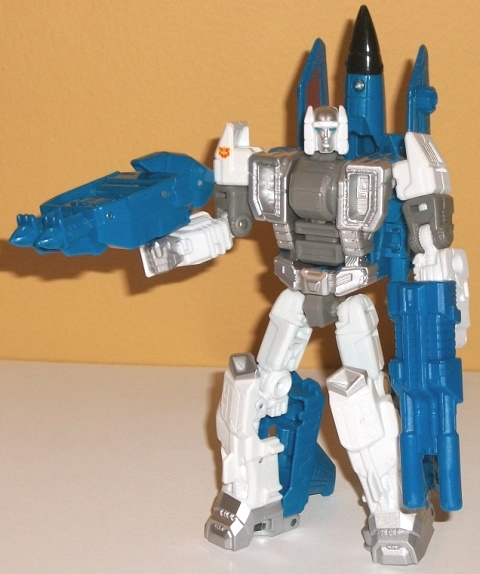
Size
: Deluxe
Difficulty of Transformation to Robot
:
Easy
Difficulty of Transformation to Leg
:
Very Easy
Difficulty of Transformation to Arm
:
Very Easy
Color Scheme
: White, blue, silver,
and some gray, black, and dark dull red
Individual Rating
: 8.4
Air Raid's G2 color scheme
is pretty well-updated for this toy, with his most obvious color change
being a swap-out of the original's black for a rather moderate shade of
blue that looks quite good, even when used in large amounts like on the
jet mode. Luckily, there's at least some paint apps to break up the blue,
such as the silver cockpit windows and the rather nice and unique dull
red "diamond" patterns on the main wings and on the vertical tailfins.
Additionally, there's "2"s on his tailfins and one of his wings, with a
G2 Autobot symbol on the other wing (and another, smaller, G2 Autobot symbol
on the right shoulder in robot mode). It's definitely a very "90s"-style
pattern in terms of TFs, and it looks fairly good, though making the red
just a touch lighter would've popped a bit more, methinks. Air Raid's main
weapon and hand/foot/gun accessory are also made of the same blue as most
of his jet mode. In robot mode, the color scheme mostly changes, with the
blue becoming more of a "framing" color scheme around what is largely a
white and gray/silver robot mode. The white contrasts with the blue extremely
well, to the point where I wish the two were "up against" each other more,
instead of one of the colors dominating each mode. The silver paint apps
on the missiles, chest, face, fists, knees, and feet help to add some contrast,
although it doesn't add as much as the medium gray plastic on the elbows
and middle of the chest/combiner port. Still, more colors were needed in
this mode; beyond the blue "framing" of the jet mode, Air Raid looks a
bit too monochrome here. Some red or a few blue paint apps would've helped--
as it is, I think this version has a slightly better-looking jet mode compared
to the mass release, but his robot mode is a little bit duller-looking.
No mold changes have
been made to this version of Air Raid.
Firefly
(G2)
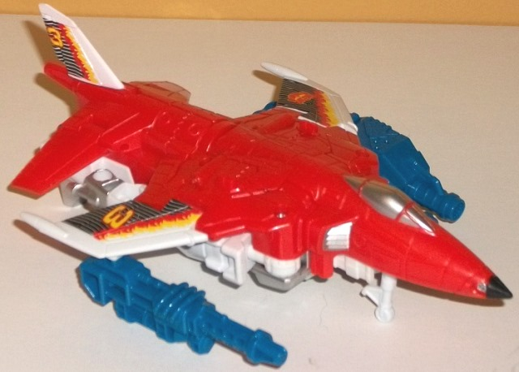
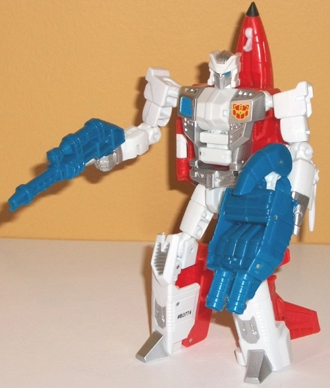
Size
: Deluxe
Difficulty of Transformation to Robot
:
Easy
Difficulty of Transformation to Leg
:
Very Easy
Difficulty of Transformation to Arm
:
Very Easy
Color Scheme
: White, moderately
light red, and some blue, silver, sky blue, black, and light pale yellow
Individual Rating
: 8.5
Firefly (Fireflight)'s
G2 color scheme was rather similar to his G1 scheme, so out of all the
toys in this boxset, Firefly is easily the least-changed from his mass
release version. In fact, at a casual glance (particularly in robot mode),
with the exception of the accessories (which are blue now, not black),
one could easily be forgiven for thinking that nothing's changed. However,
the most obvious change is with the wings and tailfin in vehicle mode,
which have had the stripes replaced with a REALLY cool-looking "flames
eating away at black lines" paint app on each, along with the number "3"
on the right wing and sides of the tailfin. On his left wing, he has a
G2 Autobot symbol (along with one on the left side of his robot chest).
I really love these paint apps, as they're so unique and, of course, help
emphasize the "fire" in Firefly. Another major-- yet, actually, minor--
thing is that Firefly's red plastic has been changed. It's actually slightly
lighter than on the mass-release, but you'd only really notice if you put
them next to each other. By and large, the trade-off for the awesome flame
paint apps on the wings is a slightly less colorful robot mode. Firefly
still has a bit of blue on the right side of his chest and in his eyes,
but the blue paint apps on his chest and the black on his knees is gone,
replaced by silver (along with some additional silver paint lining the
chest). The bits of gray plastic on the mass-release are also gone, replaced
with more white plastic. He also has some silver paint on his hands now
and on his lower legs, so at least that's good. All in all however, this
version is so close to the original I don't really prefer one version over
the other.
No mold changes have
been made to this version of Firefly.
Powerglide
(G2)
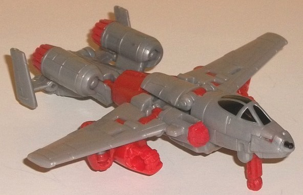
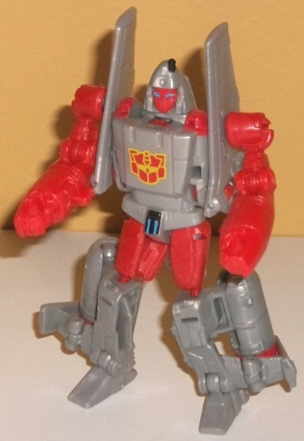
Size
: Legend
Difficulty of Transformation to Robot
:
Easy
Difficulty of Transformation to Weapon
:
Easy
Color Scheme
: Light milky gray,
light red, and some black and sky blue
Individual Rating
: 7.6
Powerglide here is a
great homage to... waitaminute, there never WAS a G2 Powerglide toy! To
correct for this... "oversight", Hasbro more-or-less flipped Powerglide's
normal colors and made his red a bit lighter to make it more "G2-ish".
For the most part, the light gray takes the place of the original's red,
and the red takes the place of the original CW toy's tan. The light red
is a pretty nice color, being just a BIT bright and thus making the toy
fit right in with a G2 color scheme even if it's not actually homaging
an actual G2 toy. It's also used JUST enough that it doesn't make the toy
overly bright, but also breaks up all the gray well enough. (That said,
I think the choice of using the light red on Powerglide's face was a bit
of an ugly call.) If the gray were a more metallic shade-- or especially
if it were painted silver-- I'd love the color scheme overall, but as it
is it's that bland milky shade I wish Hasbro would just get rid of on TFs
altogether. This choice is the reason I think this version looks inferior
to the original CW Powerglide toy. That said, there is some black here
and there to give Powerglide a much-needed dark color-- namely, on the
windows, gun, missile pack details, and a bit on the robot waist. There's
also just a touch of sky blue for an accent color on the weapon mode targeting
reticle, on the waist, and on Powerglide's eyes. It looks good against
the black and contrasts well against the red, but it doesn't really contrast
enough with the gray to do much with that. There's also a nice dull yellow-and-red
G2 Autobot symbol on Powerglide's chest, which looks great and also helps
break up the gray more in robot mode.
No mold changes have
been made to this version of Powerglide.
Quickslinger
(G2)
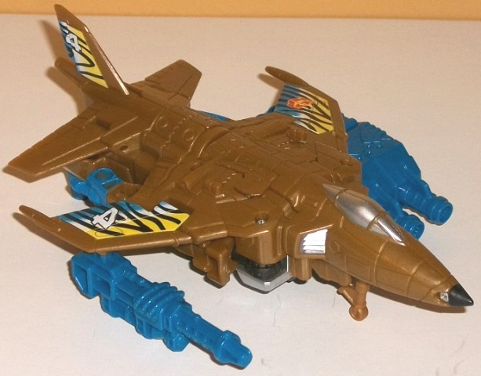
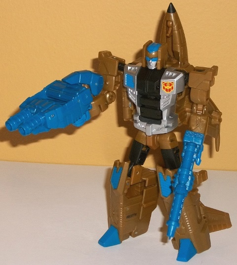
Size
: Deluxe
Difficulty of Transformation to Robot
:
Easy
Difficulty of Transformation to Leg
:
Very Easy
Difficulty of Transformation to Arm
:
Very Easy
Color Scheme
: Dull goldish brown,
blue, silver, and some black, white, and light pale yellow
Individual Rating
: 8.7
The actual G2 Slingshot/Quickslinger
toy, unfortunately, basically no longer exists-- it's a rather infamous
victim of Gold Plastic Syndrome, and many have crumbled. That makes this
updated version all the more appreciated, especially since (apparently)
Hasbro has fixed GPS. In keeping with his doomed G2 toy, this version of
Quickslinger is mostly a goldish brown-- I would have appreciated a bit
more of a "metallic" shade to the plastic, but otherwise it's about as
close as you can get to gold while not being paint. It's a pretty good
color, and really makes Quickslinger contrast well against the other G2
Aerialbots. The black-- mostly visible in robot mode-- makes for a nice
dark contrast color. The blue used for his weapons-- as well as on some
paint apps, like his fists, knees, feet, head, and the left side of his
chest-- contrasts especially well against the gold, and pops pretty well.
There's also a good amount of silver-- not only on the cockpit windows,
but also on nearly the entire main body, as well as the robot face-- and,
of course, silver and gold always go well together. To give him some more
of that "G2" vibe, Quickslinger has-- of all things-- tiger stripes on
his wings and tailfin, with blue fading to white fading to pale yellow
behind said stripes. It's pretty bizarre on a jet, but I'd be lying if
I said it didn't look good against the gold. In keeping with the other
Aerialbots, Quickslinger has a G2 Autobot symbol on his left wing and on
his chest (on the left side), and "4"s on his right wing and on the sides
of his tailfin, as well. Color-wise, Quickslinger is definitely my favorite
Aerialbot in this boxset.
Quickslinger has the
same headsculpt his
exclusive solo release
version had, but no mold changes have been made specifically for this version
of the character.
Silverbolt
(G2)
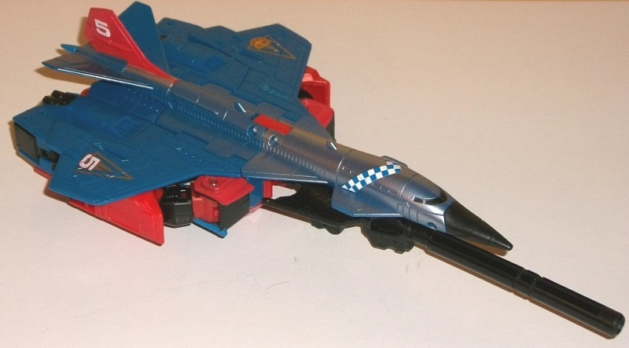
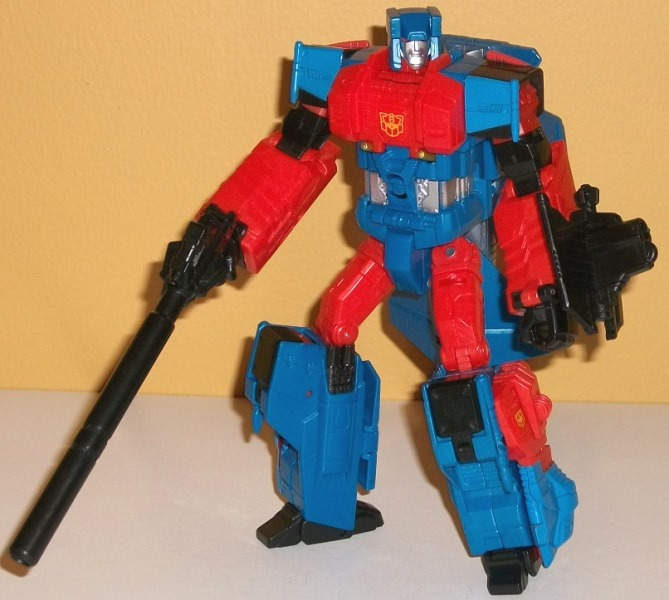
Size
: Voyager
Difficulty of Transformation to Robot
:
Easy
Difficulty of Transformation to Torso
:
Medium
Color Scheme
: Blue, red, and some
black, silver, metallic gold, white, moderately dark dull red, light red,
dark blue, and light metallic silvery blue
Individual Rating
: 9.0
Given that Silverbolt
is the "nexus" of the G2 Aerialbots in combiner mode, it's only fitting
that he has blue-- the most common color among them-- as his main color,
along with a good amount of red plastic in robot mode to boot. The shade
of red is just a tad on the light end, enough to look "G2" but not bright
enough to look outright garish. The red paint is noticeably lighter than
the red plastic, though, and there's a THIRD duller shade of plastic used
for his shoulder ratchets for unknown reasons-- plastic sturdiness, I guess?
It's a little disconcerting, but not a huge deal. Needless to say, the
blue and red contrast against each other very well, though in vehicle mode
much of the red is "hidden". To help Silverbolt still look interesting
in vehicle mode, he's got a nice amount of light metallic silvery blue
paint sprayed across the top of the nosecone and middle of the jet-- not
only does this add a bit more contrast, but it helps justify the "silver"
in Silverbolt's name, of course. He's also got some nice decals that help
him fit in with the rest of his fellow Aerialbots, such as an angular checkered
blue-and-white paint app along his long nosecone, unique angular designs
on his wings, and "5"s on the sides of his tailfin, as well as on his right
wing. (He has G2 Autobot symbols on his left wing, the right side of his
combiner chest, and his robot chest.) He's also got a bit of black, mostly
used for his weapon but also used for the Superion head, Silverbolt's fists
and nosecone, and a few other minor pieces. In robot mode he has some more
straightforward silver coloring on both his combiner and regular robot
head. To help him fit in a bit thematically with Quickslinger he has some
nice metallic gold paint on Superion's visor and antennae. On his robot
head, the combination of the blue head, the slight smirk on his face, and
his blazing red eyes make him look eeeevil, though. Kinda creepy.
At first glance, Silverbolt
doesn't appear to have any mold changes, but the lower midsection of the
Superion torso mode-- which could break somewhat easily on the original
version-- has been reinforced a bit for this release, fixing that QC issue.
Skydive
(G2)
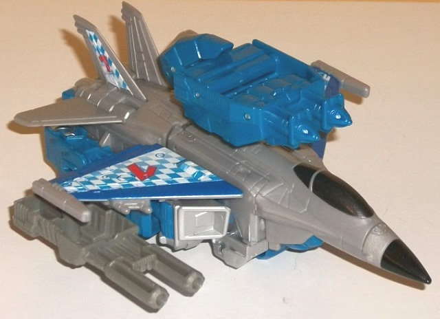
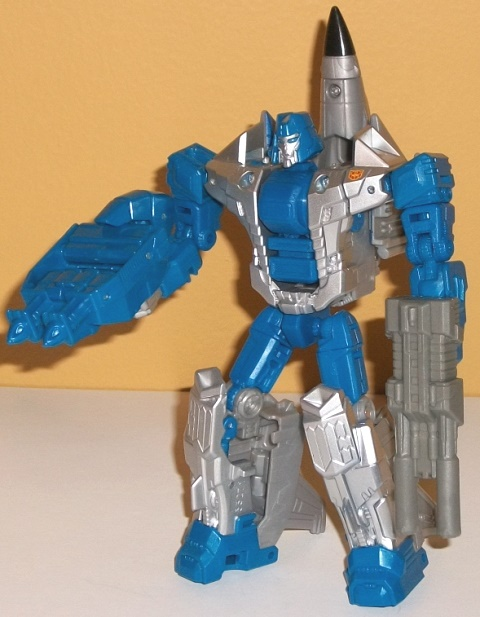
Size
: Deluxe
Difficulty of Transformation to Robot
:
Easy
Difficulty of Transformation to Leg
:
Very Easy
Difficulty of Transformation to Arm
:
Very Easy
Color Scheme
: Light milky gray,
blue, silver, and some gray, black, white, dark metallic blue, red, and
metallic charcoal black
Individual Rating
: 8.0
"G2" Skydive here has
a color scheme that is
generally
the reverse of "G2" Air Raid's,
with light milky gray being the main color in his vehicle mode, while in
robot mode blue-- the same shade as the weapons and accessories of the
other Aerialbots-- becomes more apparent. Unfortunately, in vehicle mode
the light milky gray plastic is quite prevalent and is that very boring
shade of the color, but Skydive thankfully has some really cool faded "checkered"
paint apps on the tops of his wings and his top tailfins-- on the wings
these are bordered by a nice shade of dark metallic blue paint. It really
helps to make "yet another jetformer" rather unique, and is definitely
a
little
'90s. As with the rest of the deluxe Aerialbots, Skydive
has G2 Autobot symbols on his left wing and on the left side of his chest
(or shoulder, rather), along with "1"s on his right wing and on the sides
of his tailfins. In robot mode, Skydive looks considerably better with
his overall scheme, with his arms, middle of the chest and head, feet,
and upper legs and waist all done up in that nice medium shade of blue
that's so prevalent in this set. Most of the gray is on the jet parts and
out of the way. The best part, though, is that what "gray" there is in
this mode-- his lower legs, his chest, his shoulders, his fists, part of
his face-- is all silver paint! It looks really snazzy particularly where
it's used a lot, and just looks sooo much better than light gray plastic
would've. A couple of small additional notes-- Skydive has some metallic
glossy charcoal black paint on his cockpit, which looks great against the
gray; and, to differentiate his weapon from Air Raid's, his dual-barreled
blaster has been colored a medium gray.
No mold changes have
been made to this version of Skydive.
Superion
(G2) [Combined Form]
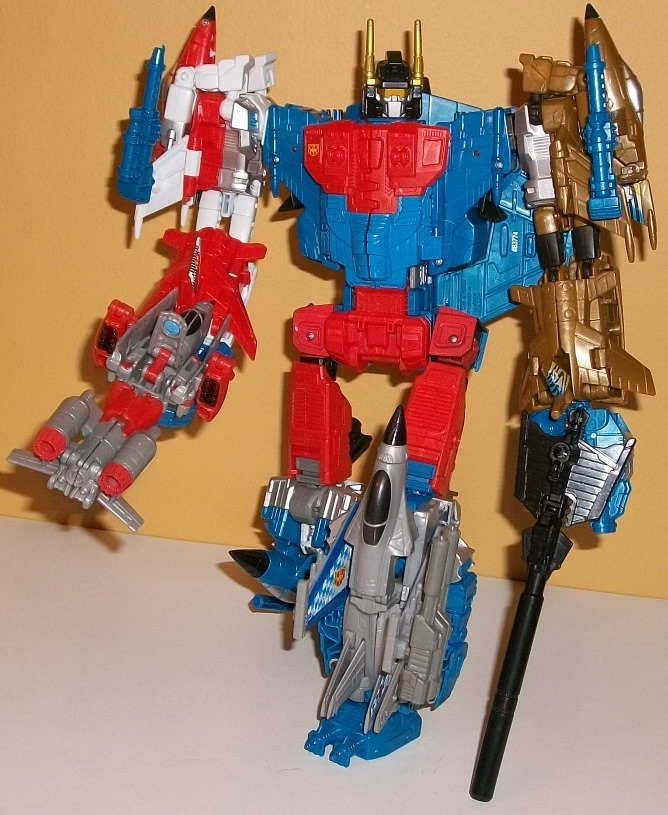
Individual Rating
: 9.2
Superion is actually
one of the few G2 combiners that's colorful, but not so bright it'll leave
stars in your vision. Most of the toy is pretty cohesive-- the red fits
together Silverbolt, Firefly, and Powerglide thematically; the blue Air
Raid, Skydive, and Silverbolt; and the gray Powerglide, Air Raid, and Skydive.
The only "odd 'bot out" here is Quickslinger, who has all the gold on the
entire gestalt except for Superion's head. All of this said, each individual
component does still certainly have its own color scheme, and thus Superion
is a bit more "disparate" than his mass-relase/G1 color scheme-- it's up
to you if you think that's a positive or not. I'm rather neutral on the
subject, myself. Since for this version the Firefly mold is used twice--
and the Skydive and Air Raid molds share a good number of parts-- you can
also get a pretty good amount of symmetry going if you have one duo for
the legs and one for the arms. My only complaint paint-wise with Superion
is that the whole chest and waist area is a bit plain, not really having
a good variety of paint apps.
Superion (G2) Bio
:
Superion is driven by one thing and
one thing only: a desire to obliterate the enemy. He attacks Decepticons--
on the ground or in the air-- with all-out force.
The "Generation 2" Combiner
Wars giftset for Superion is a decent deal at $100 (roughly retail if you
were to have bought them all separately), and he was overproduced so it's
not uncommon to find him for a good bit cheaper than that. Personally I
think, overall, that the color schemes pop a bit more on the individual
'bots, and thus I like these versions over the mass-release versions, in
general. As for which version you should go after: If you want to pick
up all the "traditional" Aerialbots in one fell swoop and like a diverse
array of colors and some out-there paint apps, this is the set for you.
If, however, you want the team to have a more unified color scheme or are
really against having more than one of the same mold used for the team,
I'd go with the mass-release Aerialbots.
Reviews by Beastbot
Back to Transformers:
Generations Index